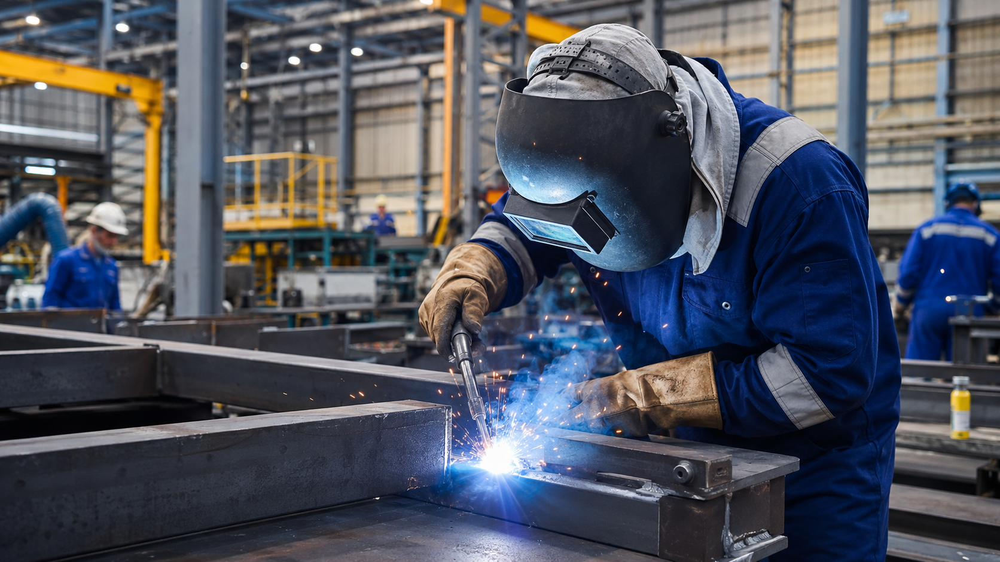
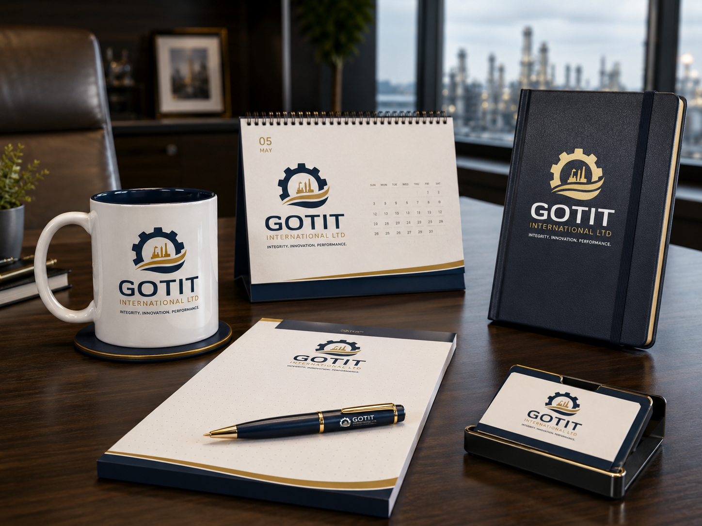

Integrity. Innovation. Performance.
Integrated solutions for oil, gas, marine and industrial operations.
GOTIT INTERNATIONAL LTD delivers dependable support across procurement, engineering, mechanical and fabrication works, pipeline services, marine logistics, facility maintenance, and technical project execution.
Trusted support partner for the energy value chain.
- Procurement & Supply Chain
- Pipeline & Flowline Services
- Fabrication & Mechanical Works
- Marine & Offshore Support

Company
Built for professional delivery in demanding operating environments.
GOTIT INTERNATIONAL LTD is an indigenous company positioned to serve operators, EPC contractors, industrial clients, and infrastructure stakeholders with disciplined execution and client-focused support.
We combine field awareness, supply capability, and project coordination to deliver value across the midstream, upstream, downstream, marine, and broader industrial sectors.
Services
A broad service range aligned to real operational needs.
Our service visuals are intentionally matched to the actual scope of oil and gas servicing work.

Procurement & Supply Chain
Industrial sourcing, equipment supply, materials coordination, vendor management, and site delivery support.
Pipeline & Flowline Services
Installation support, maintenance activity, line integrity support, and related field works.

Fabrication & Mechanical Works
Steel works, workshop fabrication, mechanical assembly, and support component manufacturing.

Marine & Offshore Support
Marine logistics, vessel interface support, and offshore operations coordination.
Engineering & Project Support
Documentation, planning, supervision, execution support, and technical coordination.
Facility Maintenance
Shutdown support, maintenance assistance, and operational support across industrial facilities.
Capabilities
Exceptional support that drives continuity and performance.
Our capability model covers sourcing, fabrication, technical manpower, field support, mechanical maintenance, and project reporting.
- Industrial equipment sourcing and supply coordination
- Mechanical maintenance and site support
- Workshop fabrication and steel modification
- Marine and offshore operational support
- Shutdown and turnaround assistance
- Technical manpower and project supervision
12+Core service lines
4Sector focus areas
HSESafety-led execution culture
24/7Responsive support mindset
Industries Served
Positioned for the energy and industrial value chain.
Brand Applications
The chosen logo implemented cleanly across real-life brand assets.
The exact supplied GOTIT logo is used throughout the website, brand package, and company profile without redesigning or distorting its structure.

Stationery & Proposal Materials
Letterhead, invoice, company proposal, business cards, envelopes, and desk items presented in a premium navy-and-gold corporate language.

Corporate Apparel
Formal shirt, polo, t-shirt, cap, and workwear shown as realistic product applications.

Accessories & Office Items
Diary, mug, calendar, writing pad, pen, and card holder for a polished executive environment.

Field Branding & Fleet Identity
Helmet, reflective vest, ID card, and pickup branding integrated organically for operations visibility.
Latest Updates
Corporate communication and business presentation ready.
Submission-ready company profile
A dedicated PDF company profile aligned to the website and brand package, suitable for introductory and tender use.
Unified visual system
The approved logo now appears consistently across the website, stationery, apparel, and application visuals.
Static corporate website
A clean HTML/CSS website structure inspired by established sector players, but tailored to GOTIT’s own identity.
Ready to move forward?
Let’s position GOTIT INTERNATIONAL LTD with clarity and confidence.
From website presentation to stationery, apparel, accessories, and company profile documents, the identity is now aligned around the exact selected GOTIT logo.